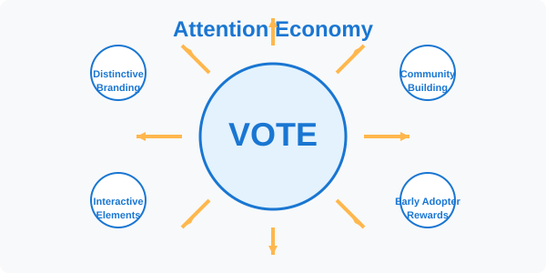
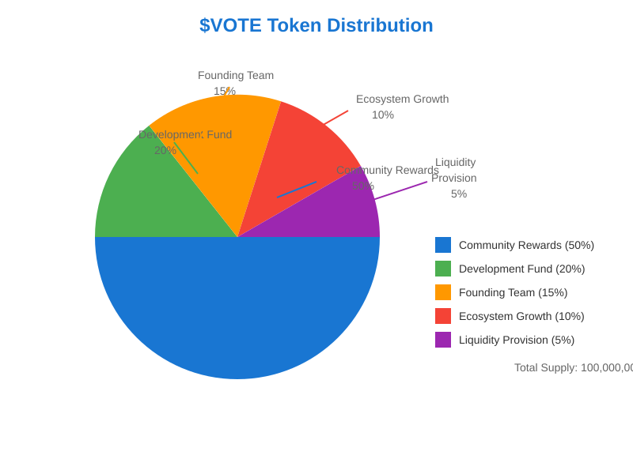
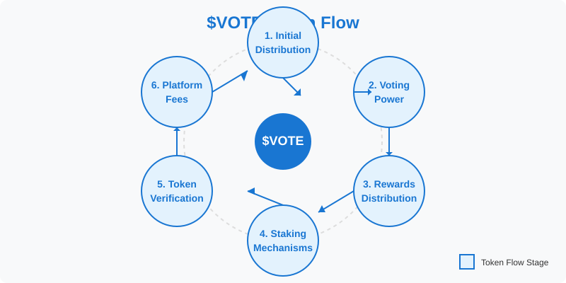

The Popular Vote Token is a conceptual demonstration of a decentralized voting system built on blockchain technology that enables transparent, secure, and tamper-proof polling. Through the use of the $VOTE token, the platform creates economic incentives for participation while ensuring the integrity of the voting process. While small in scope, this project illustrates how blockchain technology could revolutionize democratic decision-making and collective opinion gathering.
Introduction
Market Analysis
Traditional polling and voting systems suffer from critical flaws that undermine public trust:
Opacity: Vote counting occurs in centralized, closed systems
Security vulnerabilities: Centralized databases are susceptible to hacking or manipulation
Low participation: High friction in existing voting mechanisms
Trust requirements: Voters must trust authorities without cryptographic proof
Vision and Mission
Vision: To create a globally trusted platform for capturing public opinion through blockchain-secured, transparent, and verifiable polling.
Mission: To demonstrate how blockchain technology can create a user-friendly, economically incentivized platform that revolutionizes how collective decisions are made.
Meme Economics
The Popular Vote Token incorporates elements of meme economics to drive adoption, engagement, and long-term community formation. Memes are not just humorous internet content - they are powerful carriers of ideas, cultural signals, and value.
Attention Economy
In today's digital economy, attention is the scarcest resource. Our platform design recognizes this by:
Creating visually distinctive branding that resonates with crypto-native users
Designing interactive elements that encourage sharing and virality
Rewarding early adopters with exclusive benefits and recognition

Cultural Alignment
The $VOTE token serves as both a functional utility and a cultural artifact that represents membership in a community with shared values. This dual nature:
Creates stronger retention than purely speculative tokens
Attracts participants who align with the platform's mission
Establishes a foundation for long-term growth based on shared identity
Drives adoption through narrative-based engagement around democratic participation
Memetic Value Proposition
Unlike traditional utility tokens, $VOTE contains an inherent memetic component:
Social Signaling: Holding $VOTE signals participation in democratic processes
In-Group Formation: Creating a sense of belonging through shared participation
Viral Mechanisms: Built-in incentives for users to spread the platform through social networks
Humor & Entertainment: Bringing playfulness to governance through meme-inspired voting categories
The platform's "Favorite and Least Favorite Person" polls leverage universal human behaviors - celebrating heroes and criticizing villains - and transforms them into engagement mechanisms that drive community activity.
Token Economics
Token Distribution
The initial distribution of $VOTE tokens follows this allocation:
Allocation
Percentage
Purpose
Community Rewards
50%
Rewards for active voters and poll participants
Development
20%
Platform maintenance and feature development
Founding Team
15%
Compensation for initial creators
Ecosystem Growth
10%
Partnerships and integrations
Liquidity Provision
5%
Market making and trading depth

Token Flow
The $VOTE token follows a circular flow within the ecosystem, incentivizing continuous participation and engagement:
Initial Distribution: Tokens enter circulation through community rewards, liquidity pools, and development allocations
Voting Power: Users hold tokens to participate in polls and governance
Rewards: Active participants earn additional tokens for voting and engagement
Staking: Users stake tokens to receive platform fee sharing
Verification: Votes are only counted if tokens remain held during the 24-hour voting period

Token Utility
The $VOTE token serves multiple functions:
Governance Participation:
Vote on platform upgrades (1 token = 1 vote)
Signal support for proposals
Platform Access:
Cast votes in polls
Economic Incentives:
Fee sharing for stakers
Rewards for poll participation
Delegation mechanism
Incentives to hold tokens for participating in the next voting cycle
Economic Sustainability
Long-term economic health is maintained through:
Staking Rewards: Users who stake tokens receive a portion of platform fees
24-Hour Vote Verification: Votes are only counted if the user still holds their tokens at the end of the 24-hour reset period, encouraging longer-term holding
Platform Functionality
Voting Mechanism
The core voting process works as follows:
Poll Selection: Users participate in curated polls with multiple candidates
Verification: Verification of candidates through trusted sources
Voting Period: Users cast votes using their tokens
Token Holding Verification: System verifies users still hold their tokens at the end of the 24-hour period
Result Tabulation: Votes are counted transparently on-chain
Community Standards: Expressing disapproval of controversial figures
Time-Based Relevance: Capturing changing public sentiment over time
Real-World Events Response: Enabling communities to show support for or against real-world events and figures
User Experience
The platform prioritizes user experience through:
Wallet Integration: Seamless connection with popular blockchain wallets
Mobile Responsiveness: Access on any device
Intuitive Interface: Clear voting mechanics without technical complexity
Real-time Updates: Immediate display of vote counts and poll status
Security Architecture
As a demonstration project, the platform incorporates several security principles:
Transparency: All votes are publicly verifiable
Immutability: Once cast, votes cannot be altered
Resistance to Manipulation: Stake-based voting prevents Sybil attacks
Identity Protection: Users can vote without revealing personal details
Governance Framework
The platform's governance follows a token-weighted voting model:
Discussion Period: Community deliberation
Voting Period: Token holders vote
Execution: Approved proposals are implemented
Community Growth Strategy
Our strategy emphasizes organic community building through:
Creator Partnerships: Collaborating with content creators for exclusive polls
Education: Comprehensive documentation and tutorials
Targeted Outreach: Focus on communities with aligned values
Real-World Relevance: Addressing current events and topical issues to maintain engagement
Conclusion
The Popular Vote Token demonstrates how blockchain technology can transform democratic participation. While small in scope, this project illustrates the potential for secure, transparent, and engaging polling systems.
This project is not just about voting—it's about building community around shared interests, creating economic alignment between participants, and leveraging the power of memes to spread adoption. Holding tokens creates a continuous incentive to remain engaged in future voting events, developing a committed community that actively participates in expressing support or criticism for real-world events and figures.
By combining technical innovation with cultural awareness, the Popular Vote Token points toward a future where digital governance is both effective and enjoyable.
This whitepaper is a living document and will be updated as the Popular Vote Token evolves.